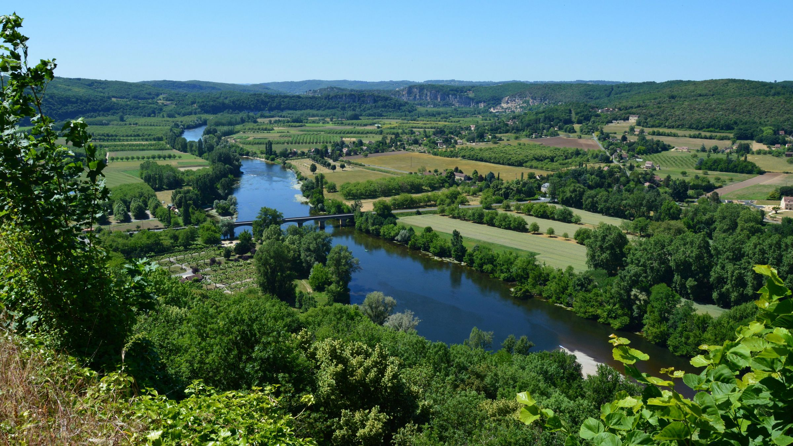
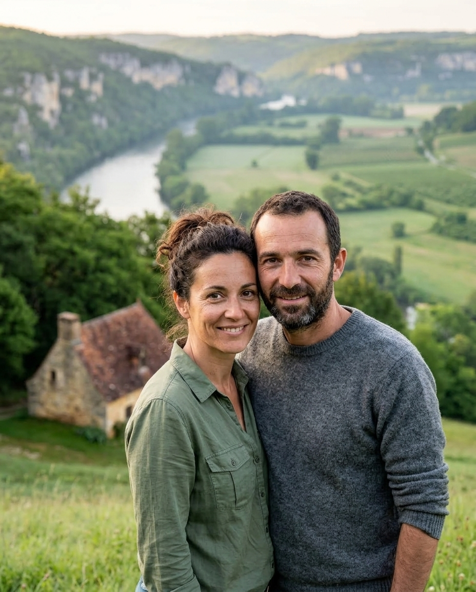

Gîte à Alles-sur-Dordogne, à 12 km du Bugue
Le Coteau
Respirez, vous êtes arrivés.
- 1 maison, 4 personnes
- À partir de 110 € la nuit
- 4,9 sur 5, 27 avis Airbnb
Le cadre
Au fil de la journée.
Perché au-dessus de la Dordogne, Le Coteau regarde les falaises d’en face. Autour, des noyers, des prés et le silence ; en bas, la rivière.
-
Au réveil
Le café à la fenêtre pendant que la vallée sort de la brume, puis le pain frais que l’on va chercher à pied au village.

-
L’après-midi
Le sentier descend jusqu’à la rivière, à l’ombre des saules : une baignade, un livre, une sieste au bord de l’eau.
-
Le soir
Sur la terrasse tournée vers l’ouest, on regarde la vallée s’éteindre. La nuit ne fait aucun bruit.

Le gîte

Une maison de pierre pour quatre, seule sur son coteau, face à la vallée.
4 personnes · 2 chambres · 70 m² · dès 110 € la nuit

À découvrir
Du bout du chemin jusqu’à Rocamadour.
Tout ce qui se trouve autour du Coteau, rangé par le temps qu’il faut pour y aller.
À pied
- La Dordognebaignade, pique-nique · 900 m
- Le sentier des noyersboucle de 5 km
15 min
En voiture, à quelques minutes
- Limeuilvillage perché, deux rivières · 7 kmLe conseil de Thomas : montez aux jardins en fin de journée.
- Cadouinabbaye et cloître · 11 km
45 min
En voiture, à la demi-journée
- Les Eyziespréhistoire · 25 km
- Sarlatville médiévale · 40 km
1 h et plus
En voiture, à la journée
- Lascaux IVla grotte reproduite, à Montignac · 55 km
- Rocamadourla cité sur sa falaise · 110 km

Vos hôtes
Marie et Thomas
Ils vivent dans la ferme voisine, à cinq minutes à pied, et connaissent tous les sentiers du coteau. Ils vous accueillent à l’arrivée, puis vous laissent la vallée.
Vos hôtes parlent français, anglais et allemand. Le cadre au fil des saisons, sur Instagram
Ce qu’on en dit
Ce qu’ils en ont gardé.
4,9 sur 5
27 avis Airbnb
relevé en septembre 2026 · Voir les avis
Google 5 sur 5 · 12 avis · Voir les avis
Les avis laissés directement à Marie et Thomas
Le café à la fenêtre au lever du soleil, la brume qui se lève sur la Dordogne : on a passé la semaine à regarder dehors.
Venu pour écrire, j’ai surtout marché. Le sentier descend à la rivière en vingt minutes, et on ne croise personne.
Un gîte simple et juste, une terrasse face au couchant, et Marie qui connaît chaque chemin. Rien à ajouter.
Deux nuits prévues, cinq passées. Le poêle le soir, et la vallée qui change de couleur toutes les heures.
Parfait pour se reposer vraiment : pas de télévision, le chant des oiseaux, et Thomas qui passe déposer des œufs.
Recueillis par les hôtes auprès des voyageurs après leur séjour, publiés avec leur accord, sans contrepartie, du plus récent au plus ancien.
- Clévacances · 3 clés · depuis 2022
- Clef Verte · depuis 2025
« Dix gîtes pour voir la vallée d’en haut », Le Journal du Périgord, juin 2026
Réserver
Votre séjour commence ici.
Vous réservez directement auprès de nous, sans intermédiaire.
Les dates libres
2 nuits minimum, arrivée tous les jours · 110 € la nuit
libredéjà réservépassévos dates
Vérifié il y a 25 min
Comment ça se passe
-
Vous nous dites ce que vous cherchez
Dates, nombre de voyageurs, envies particulières.
-
Nous vous répondons
Disponibilité confirmée et prix pour vos dates précises.
-
Vous prenez le temps qu’il vous faut
Posez d’autres questions, demandez des précisions.
-
Rien à payer tout de suite
Aucune carte bancaire à saisir, le règlement vient plus tard, avec nous.
Comment souhaitez-vous nous joindre ?
Votre demande de séjour
Nous vous répondons sous 24 heures.

Une question ?
05 53 00 00 02Appelez-nous, nous vous répondons avec plaisir.
Votre message a bien pris la route.
Nous vous répondons sous 24 heures, à l’adresse que vous venez de donner. Ce n’est pas encore une réservation : nous vérifions d’abord que tout est libre à vos dates.
Pensez à regarder vos indésirables : la première réponse s’y range parfois.
Une question d’ici là ? Écrivez-nous, ou appelez le 05 53 00 00 02.
Offrir un séjour ? Nos cartes cadeaux
Pratique
Avant de prendre la route.
Arrivée et départ Arrivée autonome dès 16 h, départ avant 10 h
Animaux Non acceptés, pour la tranquillité des troupeaux voisins
Ouverture De mars à novembre
Paiement Virement, chèques-vacances
Accès Route goudronnée, puis 400 m de chemin de terre
Réseau et wifi Réseau mobile faible, wifi par la fibre dans le gîte
Vos questions
Oui, il est entretenu et roulant. Par temps de pluie, roulez doucement dans les deux derniers virages.
Oui : Thomas peut venir vous chercher à la gare du Buisson, à 8 minutes, sur demande. Sur place, le village et la rivière sont à pied.
Une boulangerie à 20 minutes à pied, et un supermarché au Buisson, à 6 km.
Le poêle, les livres du gîte, et la vallée qui change sous la pluie. Pour sortir, le musée national de préhistoire des Eyzies est à 30 minutes.